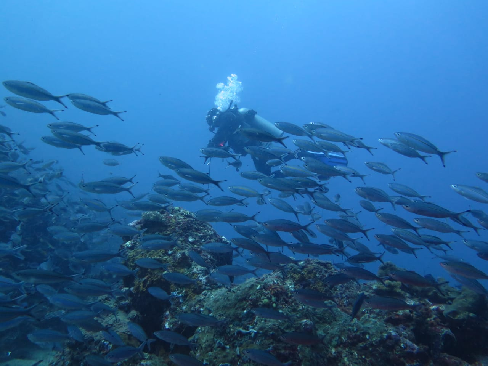

About Coral Conservation
Tentang Coral Conservation
Pengalaman Conservation

Before planting, visitors receive information about the importance of coral reefs, threats to their survival, and the specific techniques used to restore them.
Sebelum melakukan penanaman, pengunjung diberikan informasi mengenai pentingnya terumbu karang, ancaman yang dihadapinya, dan teknik-teknik khusus yang digunakan dalam pemulihan terumbu karang.

Pengunjung dibimbing oleh penyelam terlatih atau ahli biologi laut untuk menanam fragmen terumbu karang kecil di terumbu karang yang telah ditentukan.
Visitors are guided by trained divers or marine biologists to plant small coral fragments onto designated reefs.
Sembari pengunjung menanam terumbu karang, pengunjung juga bisa melihat pesona biota laut
While visitors are planting coral reefs, visitors can also see the charm of marine biota.
Banyak program hyang menawarkan kesempatan bagi peserta untuk tetap terhubung dengan perkembangan terumbu karang mereka melalui email atau portal web yang disediakan
Many programs offer opportunities for participants to stay connected with the progress of their coral reefs through email or a provided web portal.

